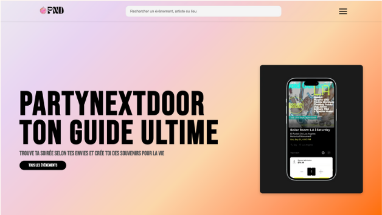
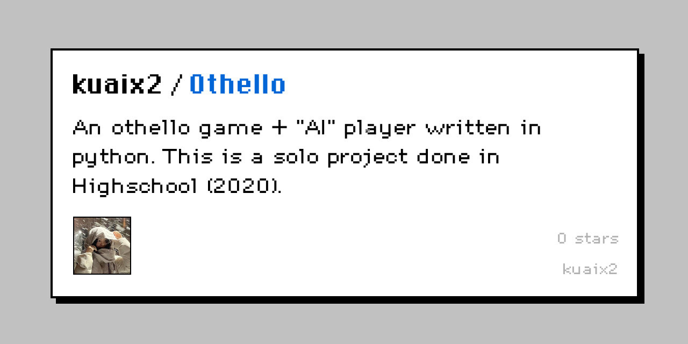
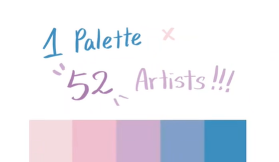
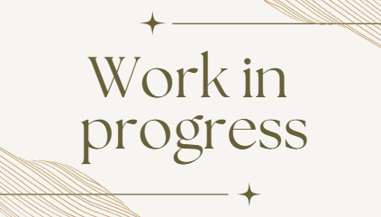

All Projects

PartyNextDoor
A website that showcases events and allows user to buy & sell tickets, with a back office that allows admin to manage events.

Othello & AI
Developed an Othello game in Python with a minimax AI and alpha-beta pruning, board display, and player vs. AI mode.

Art project - Palette challenge
An art project I hosted, gathering more than 50 artists, all working on artworks under a same color palette!

To be added!
I have a lot of projects that I haven't put on here yet! I'll update them soon, I promise!